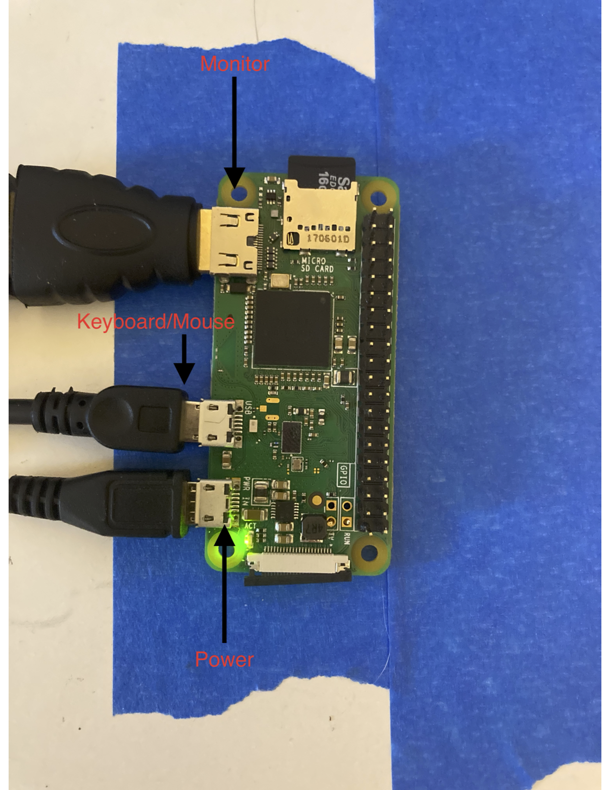
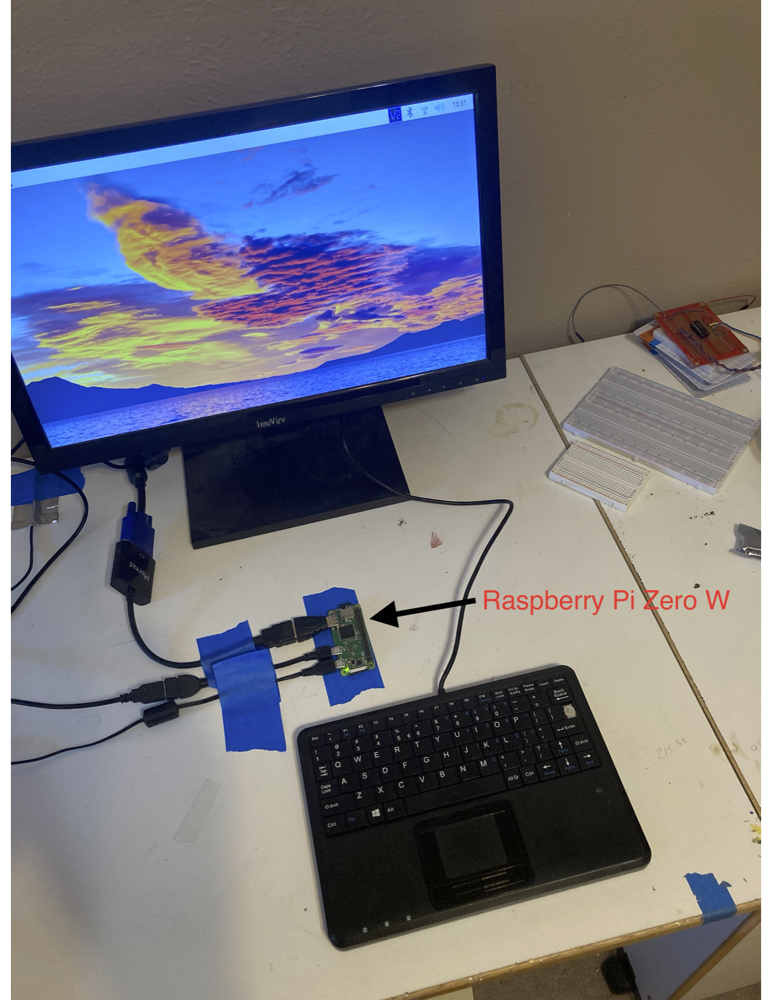
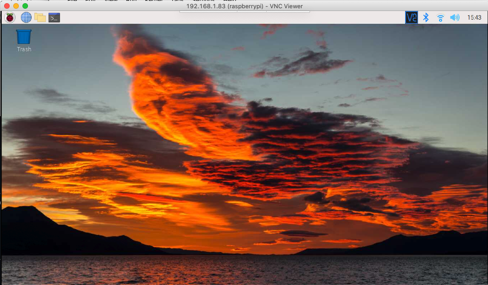
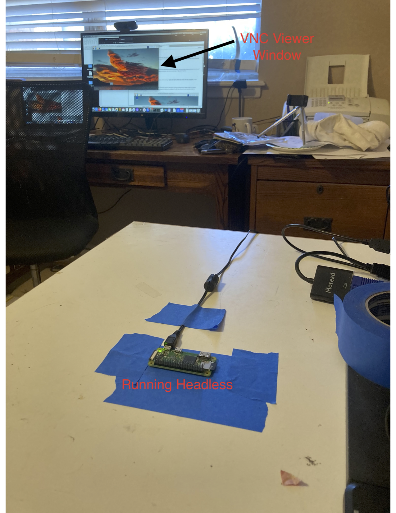

Configuring the Single Board Computer(s)¶
Introduction¶
The computer used in most of the lesson/laboratories is a Raspberry Pi Zero-W
Installing a RPi OS¶
Link to current official OS images is https://www.raspberrypi.com/software/operating-systems/
Choose the Raspberry Pi OS with desktop and recommended software as the image to download; it will work on a Pi Zero, but be clumsy, however we get a GUI which simplifies later configurations
OS Lite would be the choice for semi-professional applications, but WiFi is harder to set-up, and you would have some additional programming to extract data.
[link to video showing download]
Flashing an Image onto a SD Card¶
After the image is downloaded it needs to be “flashed” onto a micro-SD card (which is kind of like a hard-drive for our applications). I suggest using https://www.balena.io/etcher/ to manage the SD install. Etcher seems to be able to handle the SD card without a separate formatting step, which simplifies end user responsibilities.
[link to video showing flashing a card]
Booting from the SD Card¶
Once the SD card is flashed, we can put it into the Raspberry Pi Zero-W and attempt to boot the computer. I do the first boot using a dedicated monitor, and keyboard/mouse. The goal is to activate the wireless and a couple of interfaces, then do the remaining configuration headless.
The computer connected looks like:

Then we start the boot process, it takes awhile to let it expand the OS image, then configure - the important parts of configuring are getting the wireless network to work. Generally the auto configuration does well (except on TTUNet - of course).
Updating the OS¶
The first boot will automatically update if we forget to skip the process - it takes awhile! I prefer to skip, configure the VNC and SSH interfaces, then open a terminal window and type sudo apt-get update && sudo apt-get upgrade or do a full distribution upgrade sudo apt-get update && sudo apt-get dist-upgrade. You will only need to do the full upgrade occassionally (once or twice a semester); or when you break shit.
Once everything is configured the system looks like

Configuring a VNCserver¶
VNC server is installed with Raspberry Pi OS. To test the install, open VNC Server in upper right corner and examine the IP number, then on a remote machine use VNC Viewer to access the Raspberry Pi. On my development machine, the assigned IP is 192.168.1.83 and the port number is 5900. A sucessful connection looks like:

All work done in this window is occuring on the remote machine, so we won’t need a dedicated monitor or keyboard. We do need connectivity, and if you want to route the desktop a bit more work is involved.
Reboot and run headless¶
At this point we should be able to stop the RPi disconnect the monitor and keyboard, then restart and connect remotely (this is called a headless configuration). The image below shows the headless computer and a VNC window on the support laptop that is connected to the RPi.

Update to Python3¶
We will want to update to python 3; easiest is to follow https://projects.raspberrypi.org/en/projects/generic-python-install-python3